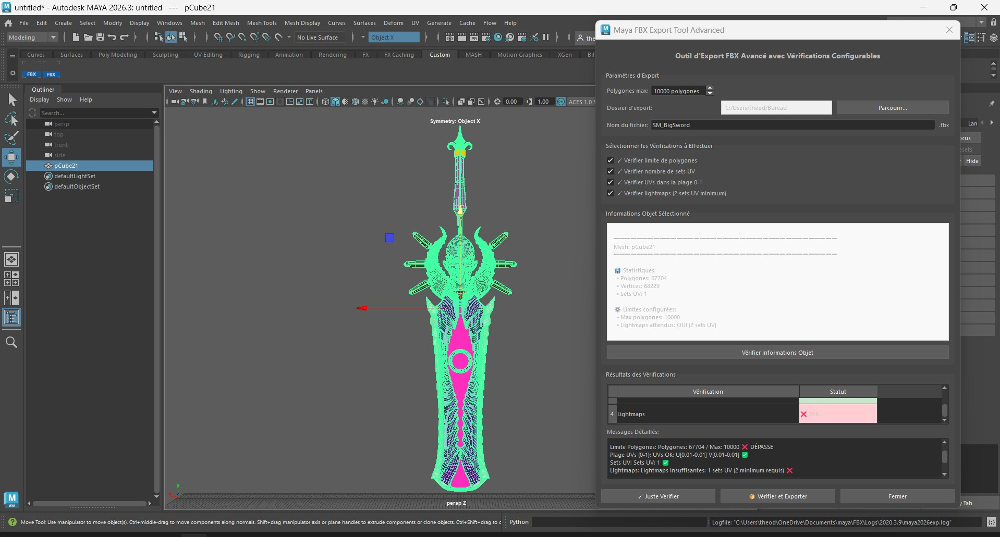

Overview
The Maya FBX Export & Validation Tool is a custom production tool developed for Autodesk Maya. It helps artists validate and export assets by automatically checking polygon count, UV layouts, UV sets and lightmaps before export.
The tool includes a custom PySide6 interface, configurable validation options and a drag & drop MEL installer to provide a fast and seamless integration inside Maya.

Tool Demonstration
My Contribution
This tool was entirely developed independently, from the conception of the features and user interface to the custom installation and uninstallation system. The goal was to make the tool accessible to everyone by providing a fast and seamless integration process within Maya.

- Designed the complete validation workflow.
- Developed the entire application in Python.
- Created the user interface with PySide6.
- Integrated the Maya Python API.
- Implemented configurable validation rules.
- Generated color-coded validation reports.
- Added a test mode for quick debugging.
- Created a MEL drag & drop installer.
- Automated script installation and Maya Shelf button creation.
- Designed an easy deployment workflow for artists.
- Developed the complete project independently.
Technologies
- Python
- Maya Python API
- MEL Scripting
- PySide6 / Qt
- Maya Shelf Integration
- FBX Pipeline
- Git
Conclusion
This project allowed me to design and develop a complete production tool from scratch. It automates repetitive validation tasks, improves asset quality before export and provides clear visual feedback through an intuitive interface.
By creating both the tool and its deployment workflow, I focused on making the solution accessible and efficient for artists working inside Maya.